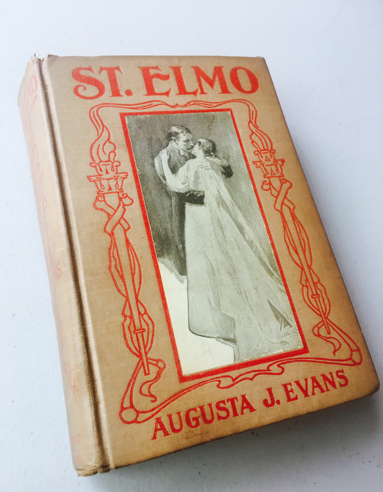

Tommie Tucker
Hi everyone! My name is Tommie and I am Majoring in VCD with a minor in Art. I love to learn. Especially when it gives you the opportunity to be creative. I have no prior knowledge of web design or how it works so I'm excited to see how much knowledge I can gain from this class.
My Favorite Movies
After George Bailey (James Stewart) wishes he had never been born, an angel is sent to earth to make George's wish come true. George starts to realize how many lives he has changed and impacted, and how After George Bailey wishes he had nAfter George Bailey wishes he had never been born, an angel is sent to earth to make George's wish come true. George starts to realize how many lives he has changed and iAfter George Bailey wishes he had never been born, an angel is sent to earth to maAfter George Bailey wishes he had never been born, an angel is sent to earth to make George's wish come true. George starts to realize how many lives he has changed and impacted, and how they would be different if he was never thereke George's wish come true. George starts to realize how many lives he has changed and impacted, and how they would be different if he was never therempacted, and how they would be differentAfter George Bailey wishes he had never been born, an angel is sent to earth to make George's wish come true. George starts to realize how many liAfter Geor George Bailey wishes he had never been born, an angel is sent to earth to make George's wish come true. George starts to realize how many lives he has changed and impacted, and how After George Bailey wishes he had nAfter George Bailey (James Stewart) wishes he had never been born, an angel is sent to earth to make George's wish come true. George starts to realize how many lives he has changed and iAfter George Bailey wishes he had never been born, an angel is sent to earth to maAfter George Bailey wishes he had never been born, an angel is sent to earth to make George's wish come true. George starts to realize how many lives he has changed and impacted, and how they would be diffengel is senteorge starts to realize how many lives he has changed and impacted, and how they would be different if he was never therehey would be different if he was never there.
Operating under the assumption that by procuring alcohol for an upcoming party they will finally be able to break their longstanding losing streak with the fairer sex, socially inept high school seniors Evan (Michael Cera) and Seth (Jonah Hill) set out to secure the adult beverages that could get them off of the geek list before they even attend college orientation. Evan is a bright young student whose outward sweetness belies his suffocating fear of heading off to college without his lifelong best friend Seth -- a hormone-driven mischief-maker who wasn't accepted to the same school as Evan. But Evan and Seth both know that college is a place of personal reinvention, and that if they are able to make that first leap together they will have forged a bond powerful enough to last a lifetime. Meanwhile, Evan and Seth's friend Fogell (Christopher Mintz-Plasse) acquires a hastily rendered fake I.D. that instantly endears him to a pair of truly irresponsible cops (Bill Hader and Seth Rogen). Penned by co-star Rogen in collaboration with former Da Ali G Show co-writer Evan Goldberg, the semi-autobiographical SuperBad was produced by Judd Apatow and directed by Greg Mottola -- who previously helmed episodes of Undeclared and Arrested Development.Operating under the assumption that by procuring alcohol for an upcoming party they will finally be able to break their longstanding losing streak with the fairer sex, socially inept high school seniors Evan (Michael Cera) and Seth (Jonah Hill) set out to secure the adult beverages that could get them off of the geek list before they even attend college orientation. Evan is a bright young student whose outward sweetness belies his suffocating fear of heading off to college without his lifelong best friend Seth -- a hormone-driven mischief-maker who wasn't accepted to the same school as Evan. But Evan and Seth both know that college is a place of personal reinvention, and that if they are able to make that first leap together they will have forged a bond powerful enough to last a lifetime. Meanwhile, Evan and Seth's friend Fogell

Leonard Maltin wasn't alone when he noticed similarities between Goonies and the 1934 Our Gang comedy Mama's Little Pirate. Adapted by Chris Columbus from a story by Steven Spielberg, the film follows a group of misfit kids (including such second-generation Hollywoodites as Josh Brolin and Sean Astin) as they search for buried treasure in a subterranean cavern. Here they cross the path of lady criminal Mama Fratelli (Anne Ramsey) and her outlaw brood. Fortunately, the kids manage to befriend Fratelli's hideously deformed (but soft-hearted) sonLeonard Maltin wasn't alone when he noticed similarities between Goonies and the 1934 Our Gang comedy Mama's Little Pirate. Adapted by Chris Columbus from a story by Steven Spielberg, the film follows a group of misfit kids (including such second-generation Hollywoodites as Josh Brolin and Sean Astin) as they search for buried treasure in a subterranean cavern. Here they cross the path of lady criminal Mama Fratelli (Anne Ramsey) and her outlaw brood. Fortunately, the kids manage to befriend Fratelli's hideously deformed (but soft-hearted) son (John Matuszak), who comes to their rescue. The Spielberg influence is most pronounced in the film's prologue and epilogue, when the viewer is advised that the film's real villains are a group of "Evil Land Developers." The musical score makes excellent use of Max Steiner's main theme from The Adventures of Don Juan, not to mention contributions by the likes of Richard Marx and Cyndi Lauper.
My Favorite book
Augusta J. Evans was a Southern author who opened a hospital for Confederate soldiers during the Civil War in Mobile, Alabama. Of Evans' nine books St Elmo is her most well known. Her beautiful writing style can be seen from her opening sentences, which read, "He stood and measured the earth; and the everlasting mountains were scattered, the perpetual hills did bow. These words of the prophet upon Shigionoth were sung by a sweet, happy, childish voice, and to a strange, wild, anomalous tune-solemn as the Hebrew chant of Deborah, and fully as triumphant". Augusta J. Evans was a Southern author who opened a hospital for Confederate soldiers during the Civil War in Mobile, Alabama. Of Evans' nine books St Elmo is her most well known. Her beautiful writing style can be seen from her opening sentences, which read, "He stood and measured the earth; and the everlasting mountains were scattered, the perpetual hillsAugusta J. Evans was a Southern author who opened a hospital for Confederate soldiers during the Civil War in Mobile, Alabama. Of Evans' nine books St Elmo is her most well known. Her beautiful writing style can be seen from her opening sentences, which read, "He stood and measured the earth; and the everlasting mountains were scattered, the perpetual hills did bow. These words of the prophet upon Shigionoth were sung by a sweet, happy, childish voice, and to a strange, wild, anomalous tune-solemn as the Hebrew chant of Deborah, and fully as triumphant". Augusta J. Evans was a Southern author who opened a hospital for Confederate soldiers during the Civil War in Mobile, Alabama. Of Evans' nine books St Elmo is her most well known. Her beautiful writing style can be seen from her opening sentences, which read, "He stood and measured the earth; and the everlasting mountains were scattered, the perpetual hills did bow. These words of the prophet upon Shigionoth were sung by a sweet, happy, childish voice, and to a strange, wild, anomalous tune-solemn as the Hebrew chant of Deborah, and fully as triumphant".